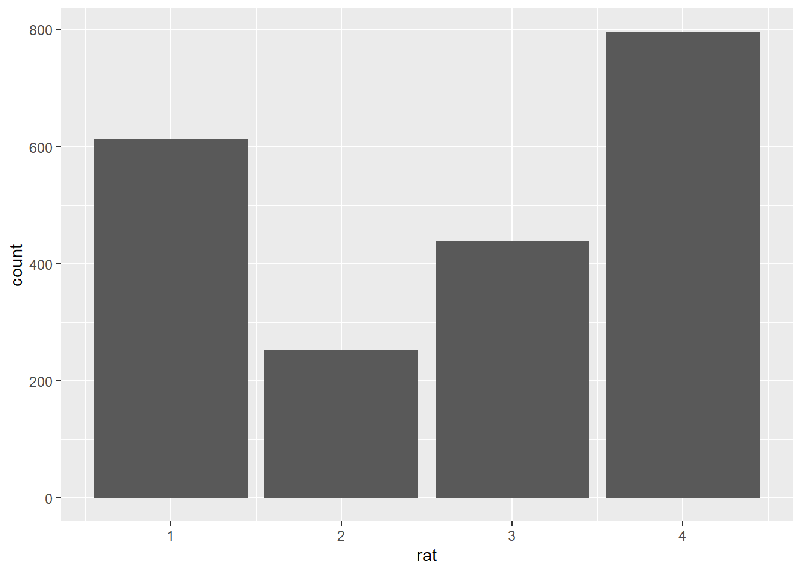
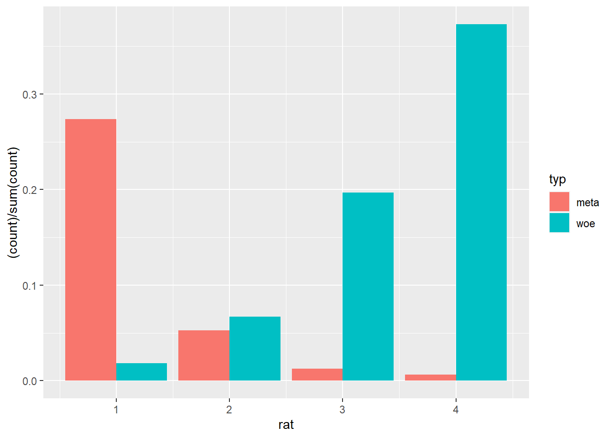
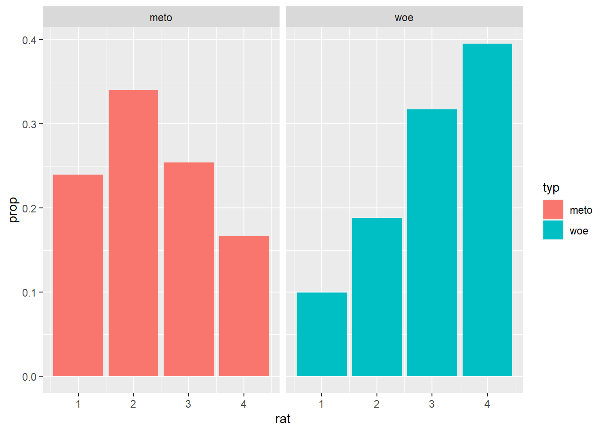
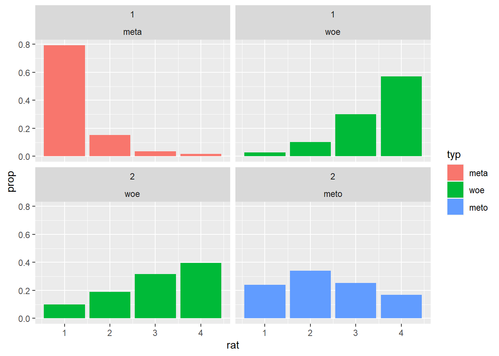
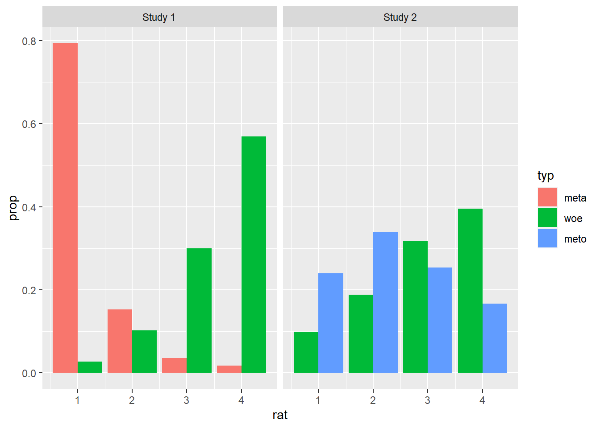
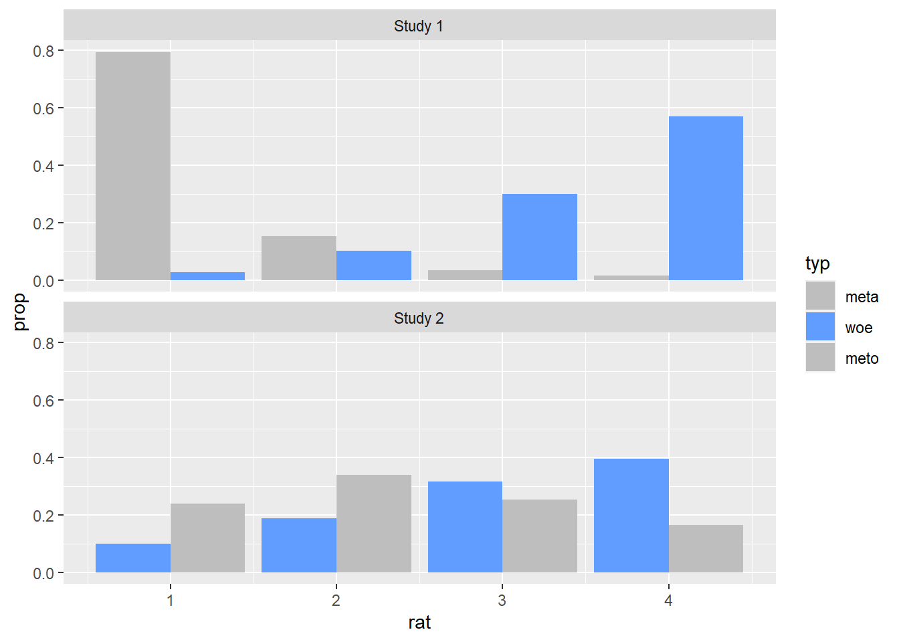
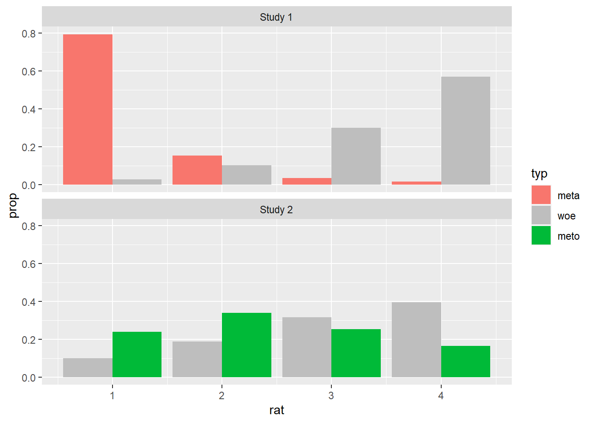
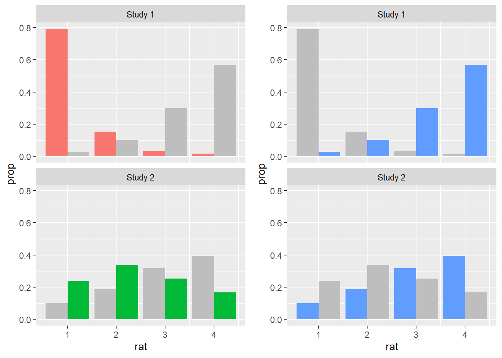
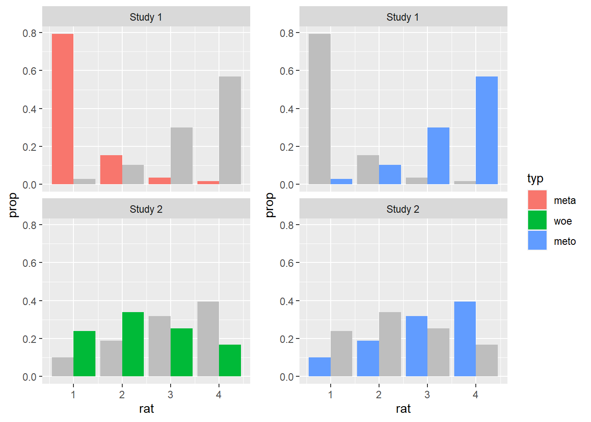

Session 2 Plotting and visualizing data in R
2.1 Measurement levels in behavioral research
Before we start plotting data using R, it is important to discuss how the different types of data objects found in a programming language such as R might relate to the levels of measurement usually found in behavioral research. Widely diverse strands of research, conducted across different fields of the social and cognitive sciences, rely on behavioral data as their main object of measurement and analysis. Depending on the specific research area and methodology employed, such data can be collected using experiments, questionnaires and surveys, as well as a myriad of other methods. Regardless of the specific data collection method employed, the considerations we discuss below apply to various measures found in behavioral research, from decision-making to information and linguistic processing, encompassing both measures of real-time processing as well as measures of offline judgment and interpretation. The examples we will be using in the remainder of this course come from psycholinguistics, more specifically from two studies on non-literal language, and feature both online and offline measures.
In behavioral research, traditionally a distinction has been made between four basic levels of measurement, namely nominal, ordinal, interval, and ratio. Just by looking at the names of the measures themselves, we can see that these levels have rather direct counterparts in the data types found in R (and in other programming languages for that matter). In practice, however, it is important to realize that the mapping between data objects in R and different levels of measurement is not necessarily straightforward, as these four basic measure types can be extended to many other categories and sub-types, which may bring with them assumptions of their own. One must always understand what measure scale their data best corresponds to, so as to encode it appropriately both when creating data, for example for simulation purposes, and when working with data imported from external sources. Let’s start by distinguishing between the four basic types of measures.
Nominal measures are best understood as categories or instances of any sort of classification where each value represents one category or class. The most basic type of nominal measures consists of dichotomous data, where there are only two categories and every token must be classified according to either one or the other category. There can also be multiple categories, each of them identified by a unique identifier, a label which usually consists of a name or a string of letters or numbers.
Example in study design: In an experimental study, individual participants as well as individual stimuli items are understood as nominal measures for the purposes of data and statistical analysis. Individual conditions reflecting a certain experimental manipulation also consist of nominal measures, as well as questions in a questionnaire or survey.
Representation in R: Nominal measures should be coded as unordered factors, the labels reflecting unique strings. No arithmetic operations can be performed on nominal measures, yet, one can perform logical operations like checking whether two values are the same or whether a certain token is included in a given category.
Ordinal measures are similar to nominal insofar as they represent categories, however, these categories are naturally ordered or ranked, as in a grading or rating scale. Even though the order of the categories is important, only the actual points on the scale are meaningful, the intervals between them not being captured by the scale. Despite ongoing discussion about the matter as well as variation across disciplines, the median is regarded as the most appropriate measure of central tendency to be applied to ordinal data.
Example in study design: In an experimental study, any sort of scale presented to a participant or respondent consists of an ordinal measure. Each point on the scale is represented by a label, the labels being organized in an order which is either theoretically or methodologically meaningful. Scales need not necessarily consist of several points, they can also be dichotomous, as in judgments of truth value.
Representation in R: Ordinal measures should be coded as ordered factors, the labels following a specific order which can be specified by the analyst. The same sorts of operations that can be performed on nominal measures can be performed on ordinal measures.
Interval measures reflect an underlying scale where the degree of difference between the individual points on the scale is meaningful. Intervals may contain arbitrary reference points, such as a zero/ starting point, which can be considered an absolute minimum.
Example in study design: In an experimental study, reaction times are interval measures. Zero is the absolute minimum, as the measurement begins only when a certain stimulus or motor/ verbal action is triggered and the measured reaction times cannot be negative.
Representation in R: Interval measures should be coded as numeric. Any sort of arithmetic operation can be performed on interval measures. The mean is the most commonly applied measure of central tendency to interval measures.
Ratio measures reflect the relationship between two units of measurement, for example a count of a certain type of token in a given time window or its proportion to another type of token. Ratios contain non-arbitrary zero values, which makes it meaningful to say, for instance, that there are are twice as as many tokens of event or category x compared to event or category y.
Example in study design: In an experimental study, counts or proportions of responses are ratio measures.
Representation in R: Ratio measures can be coded as either numeric or integer depending on the corresponding variable in the study design.
These four basic types of measurement illustrate only a portion of the possible measure scales found in behavioral study designs. The coarse-grained distinction presented here suffices for the purposes of our course, however, these considerations should also serve to highlight how important it is to understand how the variables and measurements of a study relate to the objects used in a programming language to represent and analyze the data originating from the measurements made in the study. So, in a nutshell, knowing your data is crucial to any attempt to analyze.
2.2 Why visualize data?
Our main goal for today is to learn how to produce visual representations of data. As researchers concerned with analyzing empirical data, we are interested, primarily, in two things: first, we want to understand what the meaningful and relevant patterns in a given data set are; then, we want to be able to highlight and communicate those patterns to an audience who is not directly involved in the process of analyzing the data, be it our peers or other parties involved in the larger process of scientific communication. These two aspects of the data analytic process can be regarded as distinct steps or stages in any analysis pipeline, as they involve different goals and practices. Let’s call the first of them data exploration and the second data communication.
Data exploration involves wrangling and plotting the data in different ways, according to different dimensions, in an attempt to uncover as many facets of the data as possible. In the case of confirmatory research, it might involve investigating the data beyond the scope of the originally formulated hypotheses. The main point at this stage is to gather as much and as detailed information about the data as possible, without placing much emphasis on making plots visually or conceptually transparent nor on refining them aesthetically. As a result of exploring the data, one should be be able to tell, qualitatively at least, what the main aspects of interest of a data set are, and which of these should be further analyzed by means of statistical analyses or techniques other than visualization proper.
Data communication, on the other hand, involves taking the insights gained from the exploration of the data – and possibly too from any statistical modeling – and packaging it in such a way that people not involved in the analysis of the data are able to understand what it says about the investigated research questions. This involves highlighting the most important aspects of the data and making sure the main (differences between) measurements are presented in a visually salient and understandable way. Communicating data visually, however, is not an easy task: there will always be a trade-off between clarity and fidelity to the data, especially in scenarios where the underlying data is complex and the data patterns of interest are convoluted or non-trivial. Often enough, complex study designs will necessitate complex visualizations, though any data set, no matter how simple, will demand optimizing and refining visualizations. Having said that, making decisions about what aspects of the data to highlight or omit in a visualization is an integral part of the data analytic process, and as such should be regarded as one of many possible degrees of freedom that a researcher has, along with aspects related to the design of the study, the choice of a data elicitation and data collection method, as well as any decisions related to the statistical modeling of the data.
Let’s keep in mind these considerations as we get familiar with the data we are starting to plot in the section below.
2.3 Plotting data using ggplot2
Now that we’ve discussed what we might be aiming for as researchers visualizing data, let’s get familiar with the actual data we are going to be using throughout our course. The data we are visualizing comes from two psycholinguistic studies on metonymy and metaphor. Both metonomy and metaphor are forms of non-literal language which, despite their common idiomatic nature, differ from one another conceptually as well as in terms of their degree of non-literalness. To begin with, let’s take a look at what such idiomatic expressions might look like. As the author of the studies has put it:
In a metaphor such as to swim against the current, what is said (current in a body of water) stands for something literally unrelated (a ‘general trend’). In a metonymy such as to have an eye for detail, eye refers to something that is literally or immanently related or part of the same concept (i.e., ‘ability to see details’). (Michl, 2019a, pp. 98-99)
The studies we are concerned with thus include two types of idiomatic expressions:
Metonymic expressions
etw. unter vier Augen besprechen (to discuss something among four eyes = to discuss something in private)
mit leeren Händen kommen (to come with empty hands = to arrive empty-handed, without contribution)
Metaphoric expressions
die Hand für jmd. ins Feuer legen (to put one’s hand in fire for somebody = to vouchsafe for somebody’s virtue)
noch feucht hinter den Ohren sein (to still be moist behind the ears = to be young ad inexperienced)
In the first of the two studies, Michl (2019a) investigated how non-literalness might be linked to other properties relevant to the linguistic and cognitive characterization of idioms, such as transparency and familiarity. For that, she had participants rate different German idioms along a number of dimensions, later using those ratings to predict idiom type in an inferential statistical model. In the second study, Michl (2019b) had participants read some of the idioms used in her first study in a task that involved reading the stimuli one chunk at a time. The idioms used in the second study were first rated on their non-literalness by an independent sample of participants, and that is what we turn our attention to now.
In order to understand the extent to which the expressions presented to participants in the reading experiment were perceived as non-literal, Michl (2019b) first had an independent pool of participants rate the experimental items according to their degree of non-literalness. As such, the author asked participants to rate both literal expressions as well as the target idiomatic expressions on a scale from 1 to 4, where 1 stood for an expression that was not at all literal and 4 for an expression that was completely literal. There were two actual studies: pre-study 1 focused on the metaphoric expressions while pre-study 2 focused on the metonymic expressions. Let’s get started with plotting the results, first the ones from pre-study 1. For that, we are using the tidyverse package ggpplot2.
In order to produce a visual object with ggplot2, all we have to do is to provide a data source, then tell ggplot2 how to map the variables of interest to the plot aesthetics, and finally tell ggplot2 which graphical primitives to use. You can think of ggplot2 plotting as a layered process which requires all these basic elements just described. We start with the blank canvas onto which we will be adding elements to build our graphical representations of the data. Let’s call an empty ggplot() function and see what it does.

You might be surprised at the output, but this is as much as our chunk of code does: it lays out a blank canvas. What we need to do in order to add content to this blank plot is to specify our coordinate system, or in other words, which variables should be plotted where. Let’s then try to add the ratings to the plot. For that, let’s add our data source to the code above and let’s specify which axis we want to assign the rating variable to – let’s say the x-axis. In order to do this, we need to specify some aesthetics within the ggplot() call. The aesthetics tell ggplot() which variable to map onto which coordinate.

As we can see, we now have the x-coordinate in place – we can already see the rating scale with the variable name rat as the axis title, as well as some of the points on the scale plotted beneath the axis, with vertical lines extending from them. Now let’s add the last essential element to the plot, a geometric object, or geom in R lingo. Aside from aesthetic mappings, ggplot() needs geoms in order to plot data onto the canvas. Once all three elements are in place, the basic requirements for the call are met, and the plot is built.

Here we used the geom geom_bar(), which plots the data using a bar chart. Notice how ggplot() generated the chart by using the counts of responses for each point on the scale. However, as it stands, the plot only tells us about the responses as an overall function of the points on the scale, aggregated over all data, and not about their relation to the two types of expressions we are interested in. Remember that what we were interested in knowing was what the distribution of responses would look like when taking into account the type of expression rated, either metaphoric or literal. Let’s then add that information to the plot. What we are going to do is to specify another aesthetic, this time within our geom_bar() call. More specifically, we will add color to our plot to differentiate between the two expression types, and we will do so by using fill. All there is to do here is to map a variable onto the fill aesthetic, which is embedded within the geom_bar geom.

We now see the same response distribution as above with the addition of color sections to the count bars, each color referring to one expression type. This allows us to distinguish what the relevant patterns in the data are, namely that people rated the metaphoric expressions, plotted in red/ pink, mostly as not at all literal, while rating the literal expressions, plotted in blue, mostly as completely literal. Despite now being more nuanced and informative than before, arguably the graph has also become somewhat convoluted: one needs to parse both the ‘height’ of the bars as well as their color composition in order to understand what their relation to each point on the rating scale is. One simple way to modify this default rendition while keeping the relevant color distinction in place is to plot the individually colored sections of the bars as individual bars. Let’s tell ggplot() to do exactly that by ‘dodging’ the position of the bars.

In this re-designed plot, we now see the initial bars split in terms of the type of expression they represent. This way, it is easy to inspect not only the overall distribution of responses per expression type but also the differences in terms of particular points on the scale. Next, what we’ll do to this already quite informative plot is to change the y-axis. Instead of showing the overall frequency of responses, let’s plot their relative frequency, that is, as proportional to the number of responses for each expression type.
pre1 %>%
ggplot(aes(rat)) +
geom_bar(aes(y = ..prop.., fill = typ), stat = "count", position = position_dodge())
This seems to have worked the way we intended: the proportions are being calculated relative to each expression type. In this plot, one can associate a visual pattern to a quantity which is immediately meaningful. Just by glancing at the plot one can quite easily see that people rated metaphoric expressions as not at all literal in about 80% of the cases.
We could also have plotted the ratings proportional to the overall number of responses, though this is not what we were interested in, from the point of view of our empirical and data analytic goals. This might be useful, however, in other cases. Notice the differences in distribution if we had opted for this alternative plotting.
pre1 %>%
ggplot(aes(rat)) +
geom_bar(aes(y = (..count..)/sum(..count..), fill = typ), position = position_dodge())
Now, usually there are several ways of achieving the same, or at least similar, ends in R. In the graph sequence above, we used color as well ‘dodged’ or split bars to visualize the ratings in terms of our two groups of interest, the metaphoric and the literal expressions. We opted for plotting the responses in a single graph, which means that the data points are plotted sharing the same axes as wel as the same visual real estate at the center of the plot. Notice how we also relied on a legend to be able to tell which expression type was which. One alternative to this rendition is to use facets, an option provided in ggplot2 for splitting observations or groups of observations into different windows or panels within a single graph. facets work in a very simple way, you simply specify what variable(s) the data should be split by, and how the facets are to be plotted, horizontal or vertical to one another. Here we tell ggplot() to split the data by the expression type and to plot the facets horizontal to one another.

This rendition offers a different way of visualizing the same results as above: we can see the distribution of ratings for both the metaphoric and the literal expressions. With the facets it is easy to see that the metaphoric expressions are rated mostly as not at all literal while the literal expressions are rated mostly as completely literal. Although the two facets share the same y-axis, they are clearly divided in terms of expression type, which is indicated on top of each facet by means of a label. Even if we are not exploring any customization options right now, you can probably already tell that with ggplot2 virtually any aspect of a visualization can be altered or enhanced: here, for example, we could change the position and aesthetics of the facet labels, or the range and aesthetics of the axes and ticks. More importantly for now, notice how we are facetting our data in terms of a single variable, type, though facetting is also possible with two variables, in which case there are more degrees of freedom in terms of how exactly to render the visualization in spatial terms. Much like we did before, let’s convert the y-axis to represent the proportion of responses by expression type instead of the raw response frequency.

Currently, our graph does not contain any color coding, which we replaced earlier with the facetting. This is not to say, however, that color cannot be added to a facetted plot. Let’s map the variable type onto a fill aesthetic, much like we did before.
pre1 %>%
ggplot(aes(rat)) +
geom_bar(aes(y = ..prop.., fill = typ), stat = "count") +
facet_wrap( ~ typ)
Let’s now turn our attention to the data from pre-study 2, which compared metonymic and literal expressions. Let’s plot the ratings using our latest ggplot() code.
pre2 %>%
ggplot(aes(rat)) +
geom_bar(aes(y = ..prop.., fill = typ, group = typ), stat = "count") +
facet_wrap( ~ typ)
The plot looks just like the one we had for pre-study 1, except, of course, that the data patterns are different here: while still rating the literal expressions mostly as completely literal, people rated the metonymic expressions mostly as fairly literal, in contrast to metaphors which were rated mostly as not at all literal. Now, in order to get a global picture of the combined results of the two norming studies, we would like to compare the results of pre-study 2 to those of pre-study 1. Let’s then plot the data together. In order to do that, we will have to merge the two individual data sets together, something which we can easily do in R using, for example, tools from the tidyverse package dplyr. We are using a function called bind_rows, which adds one data set right on top of the other. Notice how in the function call, in addition to the two data frames, we specify the argument .id, which gives us a label we can refer back to to know which data set each individual observation comes from.
We successfully joined the two data sets, but we also got an error that due to unequal factor levels one of our resulting factors was coerced into character. Luckily for us, we know where this error might come from: while in the data set from pre-study 1 the factor type had the levels meta and woe, in the date set from pre-study 2 it had the levels meto and woe, which means that the resulting data frame has a factor with three levels as opposed to two. That is all fine, we just have to convert the variable type in the the new data frame to factor again.
Now that we have a single data set with observations from both the pre-study on metaphors and and the pre-study on metonomies, let’s plot the combined results. Let’s go back to facet_wrap() and try to change our code from earlier to produce a plot with four facets.
norms %>%
ggplot(aes(rat)) +
geom_bar(aes(y = ..prop.., fill = typ), stat = "count") +
facet_wrap(study ~ typ)
We were able to achieve what we wanted by instructing ggplot2 to facet the data by both the original data set, study, and the expression type, type. Notice how the order of the arguments in the facet_wrap() call impacted the resulting plot: study was plotted along the x-axis while type was plotted along the y-axis. The graph is already good as it is, but let’s redesign the facet labels to aid visualization. For that, we’ll create two vectors with the new names we want to assign to the labels. Then, we’ll use the labeller() function from ggplot2 to apply those new labels to the already existing plot.
study_labels <- c(
`1` = "Study 1",
`2` = "Study 2"
)
type_labels <- c(
meta = "Metaphoric",
meto = "Metonymic",
woe = "Literal"
)
norms %>%
ggplot(aes(rat)) +
geom_bar(aes(y = ..prop.., fill = typ), stat = "count") +
facet_wrap(study ~ typ, labeller = labeller(study = study_labels, typ = type_labels))In order to conclude our introduction to ggplot2, let’s attempt to visualize the combined results with our split bar technique from earlier, exploring an alternative visualization possibility.
norms %>%
ggplot(aes(rat)) +
geom_bar(aes(y = ..prop.., fill = typ), position = position_dodge()) +
facet_wrap( ~ study, labeller = labeller(study = study_labels, typ = type_labels))
This is an interesting plot: it subsumes the ratings for each expression type within a single facet which tells us which study the ratings come from. Despite the usage of the split bars though, the plot is somewhat convoluted, as there is a lot of visual information in each facet. Let’s try to modify this graph so as to keep both distributions but only focus on a single expression type per facet. For that, we’ll actually plot the graph twice, once highlighting the literal results and once highlighting the non-literal results.
First, let’s create two vectors with the color highlight information: for the literal facets, we color the literal responses in their original color and the non-literal responses in gray; for the non-literal facets, we color the non-literal responses in their original color and the literal responses in gray. In both cases, we follow the original coloring scheme, plotting our graph once with each coloring information.
literal <- c(
"woe" = "grey",
"meta" = "#F8766D",
"meto" = "#00BA38")
non_literal <- c(
"woe" = "#619CFF",
"meta" = "grey",
"meto" = "grey")
literal_norms <- norms %>%
ggplot(aes(rat)) +
geom_bar(aes(y = ..prop.., fill = typ), position = position_dodge()) +
facet_wrap( ~ study, ncol = 1, labeller = labeller(study = study_labels, typ = type_labels)) +
scale_fill_manual(values = non_literal)
print(literal_norms)
non_literal_norms <- norms %>%
ggplot(aes(rat)) +
geom_bar(aes(y = ..prop.., fill = typ), position = position_dodge()) +
facet_wrap( ~ study, ncol = 1, labeller = labeller(study = study_labels, typ = type_labels)) +
scale_fill_manual(values = literal)
print(non_literal_norms)
Now that we have two plots, each with their own color highlight, we merge them together into a single plot. This time, we will use a function from an external package, namely the cowplot package, as ggplot2 doesn’t offer us exactly the tools we need. We use a function called plot_grid(), which is being called from the package cowplot via cowplot::plot_grid(), and to it we add the two plots we just created. Notice how within the call we specify that no legend should be plotted. This is the case as we’ll generate a common legend below.
plot <- cowplot::plot_grid(
non_literal_norms + theme(legend.position = "none"),
literal_norms + theme(legend.position = "none"),
nrow = 1)
print(plot)
Now, all we need to do is to produce a common legend for our new plot, and then to combine the plot with its legend. In order to do that, we generate the plot we started with, where there was no custom color information, only so we can get the legend with the right colors in it. We then use the useful get_legend() function from cowplot to extract the legend. Finally, we produce our final plot using plot_grid() again, now with the legend included.
legend_norms <- norms %>%
ggplot(aes(rat)) +
geom_bar(aes(y = ..prop.., fill = typ), position = position_dodge()) +
facet_wrap( ~ study, labeller = labeller(study = study_labels, typ = type_labels))
print(legend_norms)

2.4 Session 2 summary
In order to produce a plot with
ggplot2three basic elements are needed: theggplot()call which sets the canvas, a data source and the basic coordinate aesthetics, and a geometric object, also known as a geom;geoms are graphical primitives which are used to plot different types of graphs. In today’s session, we only used
geom_bar(), which plots bar plots, butggplot2offers a myriad of other geoms, some of the most useful for our purposes beinggeom_point()for scatter plots,geom_box()for box plots, andgeom_violin()for violin plots. We will use some of these other types of geoms later in our course. As we will see, different geoms allow us to plot different types of variables as well as their corresponding interactions;aesthetics allow us to add more elements to a plot, on top of the base geom specifications. They also allow us to customize our plots in different ways. We saw how to add color to a plot using
fillbut also how to create subplots usingfacet_wrap(). We also made some adjustments to our base plots specifying thepositionandlabelleraesthetics;We learned that with
ggplot2there are usually several ways of achieving the same desired ends. We will talk more about clarity and relevance in data visualization in the next sessions, but already at this point it’s good to realize that the same data, with the same intended visualization goal, can be visualized in a variety of ways, often to the same utility to the target audience. Although there are some principles which are generally preferred across different visualization contexts, ultimately many of the design choices are dependent on the personal goals and taste of the analyst. Standards also vary from one field of research to another, but the main takeaway is that we should aim at a trade-off between clarity and functionality that best suits our particular needs as analysts visualizing a specific data sets.You can find a summary of the essential
ggplot2functions on this Cheatsheet.
2.5 Session 2 exercises
fillis not the only way to add color to plots usingggplot2. Using the documentation, check what the aestheticcolordoes and then try to replacefillwithcolorin one of the plots above. If you’re feeling curious, try using bothfillandcolor.In the plots where we plotted proportions, the scale on the y-axis shows ticks at every increment of 0.2, starting at 0. Replot one of the graphs above such that there are ticks at every increment of 0.1 instead. Try using the function
scale_y_continuous, and read on the options for thebreakaesthetic.There are two functions used for facetting in
ggplot2:facet_wrap(), which we’ve already used, andfacet_grid(). Read onfacet_grid()and try to use it to replot one of the graphs from above.